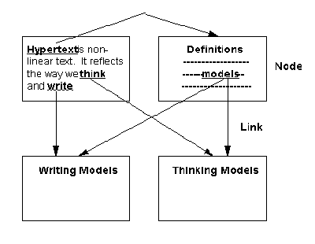

Hypermedia – Hypertext
1.1 Hypertext
Hypertext has been defined as “an approach to information management in which data is stored in a network of nodes connected by links (see Figure 1). Nodes can contain text, graphics, audio, video as well as source code or other forms of data.” [Smith & Weiss, 1988]. Hypertext with multimedia is called “hypermedia”. The promise of hypermedia1 lies in its ability to produce large, complex, richly connected, and cross-referenced bodies of information.
In 1965, Nelson coined the word “hypertext” (non-linear text) and defined it as “a body of written or pictorial material interconnected in a complex way that it could not be conveniently represented on paper. It may contain summaries or maps of its contents and their interrelations; it may contain annotations, additions and footnotes from scholars who have examined it.” [Nelson, 1965].
The original idea of hypertext was first put forth by Bush in July 1945. He described a device called “Memex” in which an “individual stores his books, records and communications, and which is mechanized so that it may be consulted with exceeding speed and flexibility. It is an enlarged intimate supplement to his memory.” [Bush, 1945]. He described the essential feature of Memex as its ability to tie two items together.
The essential feature of hypertext, as defined in recent years, is the concept of machine-supported links (both within and between documents). It is this linking capability which allows a nonlinear organization of text.
Outside the academic world, due to the implementation of hypertext-like features in products such as MS Windows Help, information systems professionals are of the opinion that hypertext is just another user interface approach. However, hypertext is a hybrid that spans across traditional boundaries. It is a database method providing a novel way of directly accessing and managing data. It is also a representation scheme, a kind of semantic network, which mixes informal textual material with more formal and mechanized processes. It is an interface modality that features link icons or markers that can be arbitrarily embedded with the contents and can be used for navigational purposes [Conklin, 1987]. In short, a hypertext system is a database system which provides a totally different and unique method of accessing information. Whereas traditional databases have some structure around them, a hypertext database has no regular structure [Nielsen, 1990d]. The user is free to explore and assimilate information in different ways.

Figure 1.1: Example of a Hypertext Document
1 In this paper, the terms hypertext and hypermedia are interchangeably used.